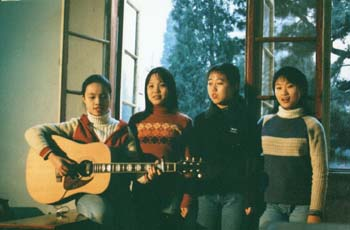
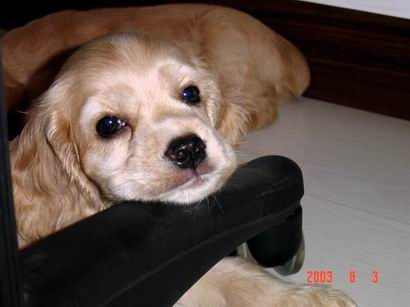
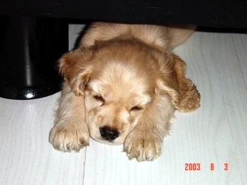
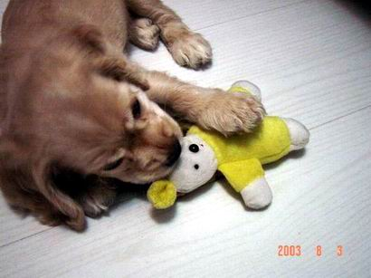

Archives : 2003-08
无题 @ Aug 31, 2003
生活中,得了一些,也必失了一些.世道之公平,便在于此.凡人皆比这不足,但比那有余.真的,若有所得便是人生,若有所撼也是人生。谁能得到，占尽一切便宜？
为什么没有人承认，令自己眼界大开，变得成熟的因素，不是“得”，而是“失”？失望、失败、失意、失恋......
世上若有些东西是可以分的，一切便是完美，，或者是更有商量的余地。可惜好的东西容易分，坏的东西分不了。必须由当事人一手一脚承受。
小孩跌倒时，若左右一瞥，没有发现大人在身边，竟便不哭，干脆自己爬起来算了......有人呵护你的痛楚，就更疼。没有人，你欠尊贵，但坚强争气。
生命不仅仅是一次盛宴，它还应该包括采购、烹调，有的时候还会拉拉肚子或呕吐。生活大致有两方面的内容：一是处理一系列的麻烦；二是享受由此产生的快乐。
我们的欢欣与其说取决于对幸福的敏感，不如说取决于对痛苦的迟钝。
你独自一人怎能温暖 @ Aug 28, 2003
一边,YU哭着打电话给她，说她流产了，而网络的另一边是我。
上帝给人爱的专利，同时也给人吃苦的专利。人不可能活许多次死许多次。
You’re with me
Til the bitter end
What we had transcends
This experience
Too painful to
Talk about
So I’ll hold it in
Til my heart can mend
来自MOKO @ Aug 19, 2003
我一直高估了这座城市，也低估了自己的浮躁。
也许感情总是因为荒芜而燎原，又因为炽烈而萧索。
夏天降温 @ Aug 15, 2003
外面下雨，气温降了将近10度，微凉。19：30去机场，等待。
做梦。黑白色、两次、内容相近的梦，眼睛潮湿着从梦中惊醒。思绪象没洗的头发一样蓬乱带着腻人的气味，悬浮于时空的交叉点，我们都害怕面对真实，Y说你去看看《骇客帝国I》，男主角从缤纷的虚幻分秒间回到真实的漫无边际的黑暗里，对，真实就是那样的，你选不选择？
空着脑子双手忙碌，难道是生理周期的缘故？
明天自己的生日，29岁。
在“MOKO说话：夜长梦多”上读到这段：
part3
正如臭虫所述，这个世界原本是没有任何感情色彩的，你之所以痛苦，那是因为你总想去解释世界。外物给你的影响不过是它对你自身态度的反射。
是的，我亲爱的臭虫，我的兄弟，当他坐上8月11日中午11点美联航的班机，要在芝加哥和洛杉矶转机才抵达弗吉尼亚时，我还在反复回味他的话。
真是很奇妙的感觉，那个人刚才还不过是在上海的机场里伴着身后关不掉的嘈杂大声说话，但他至少和你身处在同一个时区同一个水平面，而在十多个小时昏天黑地的飞行后，他竟然到了地球的另一端，你知道，地球是圆的，他和你变成了脚对脚立着。这是真正意义上的距离，不论是空间还是时间？
我一再让自己的黑夜变成了他们的白昼，这个，真的很奇怪。
我一直无可自拔地沉迷于这种感受，兀自在头脑中演绎，舍不得出来。
该死的病毒 @ Aug 14, 2003
晚上在家测试新拿回来的笔记本SONY TR1C,晕,遇上自动关机的病毒，下班还听同事RAIN说他的电脑晚上要修，总是自动关机染上病毒了。我真不走运！在MSN上问武汉大学一个大三学计算机专业的小孩怎么办，他给我网址，下了两个杀毒防毒的程序下来装上。在MSN上试用了摄像头，摄像头在显示器上方的中间，真不错！其它功能慢慢在看在试......

王小慧《我的视觉日记》（文·海豚） @ Aug 14, 2003
“是真爱就不能没有悲剧倾向”


今年冬天，一本书在两个半月内再版了四次，它的作者就是王小慧女士，一位旅德15年的摄影家。书名起得老实，《我的视觉日记》，插图倒很丰富。起初，我随意地翻开了它。一天之后，当我读完这本400多页的厚书，我竟感到作为读者实在是有些承受不起：虽然文体稍嫌絮叨，但这本书有着极为罕见的痛苦和纯真，事先我却全无准备。王小慧在书中将自己完全打开了。她是命运的亲生女儿。母体分娩时的阵痛以及产后的喜悦，都被她一一记录在文字和镜头里了。
刚读到第三章《燃尽的蓝蜡烛》，就迎面遇上一个悲剧。一位叫安斯佳的外国演员因为深爱王小慧而无力自拔，在她宿舍当着她丈夫的面跳楼自杀了。他临死前不久写的诗：“我的顺从根植于深深的欲望，我的玫瑰浇过鲜血才能盛开。”——真叫人受不了，想想那场景，再看到书中所附安斯佳的照片，他兀自在那里含笑不语。
继续往下读，差不多有40页，《远处的光》，另一出悲剧正在等待我。王小慧和她丈夫俞霖，她把他们之间的爱情描述为“大孩子般的纯洁”，“半幻觉”的“绵绵情意”，他们是同济大学建筑系的同学，毕业后双双留学德国，一对金童玉女天仙配。1991年10月30日，王小慧刚刚结束了大学生活，决心从事自己所喜欢的摄影行业，这样可以自由支配时间，多与丈夫团聚。第二天是万圣节，西方俗称“鬼节”，相当于咱们的清明节，他们开车前往布拉格，为了完成她的稿约。因为经过几年的努力，王小慧在德国摄影界已经闯出了些小名气，有出版社开始向她约摄影作品了。谁知竟在路上发生了交通事故，俞霖被撞死。


接二连三的悲剧让外人都觉得恼火，这样捉弄人也太过分了。而当事人呢？ 王小慧从昏迷中醒来，脑震荡，鼻骨粉碎，两条肋骨撞断，更难以接受的是，那么好的爱人彻底失去了。“包里刚好带有一个14毫米的超广角镜头，使我可以自己举起手不用借助于三脚架来拍摄自己。”她以艺术家的自觉，拍下自己肿胀变丑的脸，而她以前是赫赫有名的美女，众人心中的“缪斯”。她努力举起相机拍下病床和救护车周围的一切，她拍下善意的病友，拍下了自己第一次站起来，并且拍下了丈夫追悼会的情形。
王小慧的自拍系列被称为“摄影史上最真实的自拍作品”，相机是延伸出去的一截手臂，她自己比喻为“第三只眼”，也就是外在自我对内在自我的观照——她用它完成了和严酷事实的对话，最终获得了话语权，以及世界性的影响。她那种“又苦又美”的摄影风格也基本定型。


美女摄影家
在一个私下的场合，我见到了王小慧女士，她瘦，眉眼总带笑，而我作为一个读者却沉痛得笑不出来。
她难以归类。长相过于端庄和精致，高鼻梁似乎有一点儿歪，也许是车祸留下的痕迹，穿着裙子，颇修边幅，与她职业摄影家的身份不吻合。你会觉得她美得相当脆弱、家常，眼神有时是无助的，可是一堆人中唯有她在一刻不停地干着自己的事业，周围的人倒是围着她转。一个东方弱女子，单枪匹马浪迹天涯，但她很有人缘儿，她居留的城市慕尼黑，不许她搬走，这样他们所宠爱的小慧就可以永远住在身边了。
因为她学建筑出身，又写一手漂亮文章，会让人联想起林徽因，她的那段生死恋和周游世界的经历，又有些像三毛。她刚到北京的第二天，就得知网上管她叫做“美女摄影家”……
这是一个创作力惊人的美女摄影家。那本视觉日记写作期间，王小慧得了椎间盘突出。她躺在病床上，把想写的东西对着录音机讲，然后由保姆帮着整理，最后她亲自校对。这是行之有效的办法，仅花五周时间，写出了洋洋30万字，一天近一万字，那些叙述失去爱人之痛的抒情段落就是她关上灯对着静夜倾吐的结果。
她深受命运的青睐，如果减去那两件接踵而来的悲剧的话。王小慧几乎步步顺利，恢复高考的第一年（1977年）即以高分考取名校（如今她已是同济大学的客座教授），与爱人一起早早被公派留学，搞摄影引起大众关注，其摄影集《女人》入围“欧洲年度摄影集大奖”，并获“柯达杯”优秀摄影作品奖，写剧本又获奖，继而用奖金将它拍成短片——一部叫《破碎的月亮》的电影为她获得了几个奖项，其中包括德国电影“影评人”奖，书籍出版也常有不错的市场反应，她每年都能鼓捣出几件很像样的事情来，今年则参加了“中外摄影家聚焦北京”的活动，为“申奥”拍摄。
她勤奋得过了头，“我小时候的外号就叫‘小闲不住’”，“我目前处于创作的高峰时期，忙得连谈恋爱都顾不上了”。她尚未成为大师，没有那份自在，她只不过是勤劳的艺术工作者，流着汗水，干着粗活，在长期的体力劳动中聚敛着经验。


风格的流变
细看王小慧的摄影作品，觉得她抓住了两点，一个是东方，一个是女人，所以能在西方引起较大反响。
有一句颇为有趣的评论说：“她在人们熟悉的事物前按下了快门。”王小慧不以猎奇取胜。从书中提供的线索来看，她的创作大致经历了四个阶段。
她早期的摄影作品比较唯美，主要拍摄一些风景和人体。开一句玩笑说：风景和人体都是人家的，如何能利用那些熟透了的元素把老外震了呢？那时王小慧正在转型中，幸好学习建筑打下了深厚的艺术功底。她有意识地引进了一些中国古老的观念来拍摄人体，例如“男左女右”、“合二为一”、“阴阳”和“五行”，她喜欢拍摄略湿的头发，让它带有书法的韵味。她拍摄的西方城市和建筑总有一层前置的薄膜，似乎有一层面纱，使形体变得不那么确定，有着中国水墨画的痕迹。深厚的文化底蕴把她的作品托起到一个高度，西方人也从她东方化的简略中找到了新颖的视角。
此外，王小慧早期还拍摄了不少道路、海岸和天空的照片，它们是直指未来的矢量：那是与摄影者本人生活相关连的某种隐喻，人生道路不正如此吗？这条线索被她带入下一阶段。
随后就是她的自拍系列。经历了一番生死考验后，王小慧的作品蒙上了强烈的自传色彩，她在镜头前自渎、自救以及自省。她触摸到了艺术的本质，并且开始进入严肃的写实主义创作。她这一时期的作品很有震撼力，既是纯个人视角，又具有一种超越性，超越了生死和性别。


紧接着，她游历列国，拍摄其“人物系列”。她说：“我强调让他们注视着我，这些照片都是在和被拍摄者至多两米的距离内拍摄的。”王小慧扔掉了长焦，走近些，再走近些，面对面，互相凝视。她用近摄的方法来捕捉人物，使镜头前的人们具有同一性：古典而平和，对世界充满信赖。近摄陌生人，让人们在一面之交中打开心扉，王小慧做到了，女性原本就是具有亲和力的。她拍摄的泰国妓女是这一时期的杰作，评论家说：“这些面孔比城市景观更有人文涵义。”此中还有一个花絮，后来她结集出版《从眼睛到眼睛》，因为涉及到肖像权，她又一一找到那些在她镜头里出现过的朋友或是路人，让他们签授权书。看来，摄影乃是一项艰苦的社会工作。
第四个阶段，她拍摄了“花之灵系列”和一些抽象作品。她镜头下的花朵像是“无言的结局”，有时又那样地俏皮。她拍下日常生活中最不被人注意的细节，观众很难猜出她到底拍的是什么，在那些独具美感的抽象作品身上，她所追求的是良好的肌理和浓缩的诗意。
一次，王小慧与朋友谈论摄影的意义。她认为是抓住感觉，“摄影是一种可能的方式，把这种稍纵即逝、瞬息万变的情绪用一种象征性的图像固定在方寸之中，无论以纪实的或艺术表现的方式。”她强调说，存在的危机是，我们太轻了，生命中不能承受之轻，轻得都麻木了，我们需要用艺术来保持警醒和激情。
狗的幸福观 @ Aug 08, 2003
狗妈妈对小狗说：“幸福就在你的尾巴上。”小狗就咬着自己的尾巴一直转。然后它说：“妈妈，我怎么一直追着幸福就晕倒了？”它妈妈说：“抬起头往前走，幸福跟在你身后。”
Comment by 胡子 2003-08-07 @ 09:04:40 @ Aug 07, 2003
在网上，“穷人”已经是一个外延模糊的词，便宜的汽车可以叫做“穷人的车”，经济配置的电脑可以叫做“穷人的电脑”，意甲联赛弱队打赢了强队叫“穷人的胜利”，街上流行昂贵首饰和简单T恤的搭配，也叫“穷人的时尚”。总之，钱不多就是穷人，钱多也可以叫穷人，只要你自己不自认为是富人。
在物质普遍比较丰富的背景下，穷人、富人的概念已经不是“朱门酒肉臭，路有冻死骨”的区别了。很多时候，你根本不能从外表上判断出谁是穷人谁是富人，比尔.盖茨常常穿便装，城市里的打工仔倒是西装革履。
穷人和富人的概念需要重新界定，并非生活在温饱线下的人才叫穷人。
穷和富是相对的，一个在外资公司任职的白领，月薪3000元，还是觉得紧巴巴的；而一个退了休的老大爷，虽然每月只拿1000多元退休金，却对生活满足得很。穷和富很多时候是一种感觉，在富裕地区，一个人即使有车有房（多半是贷款买的），可能仍然属于低收入者，每天仍得为生计奔波。但在另外的贫困地区，他这样的情况已经足以让当地的大腕垂涎三尺了。
收入越高的人越觉得自己穷，这并不是荒诞，收入高往往支出也高，反倒入不敷出了；收入高的人常常自视也高，总觉得身价还没抬够，还可以更高，当然他要叫穷。央视曾经做过调查，多数月收入在1000元以下的人认为自己的生活已经达到小康，而部分月薪超过3000甚至5000元的人却认为自己的生活与小康标准还有很大的距离。
小康只是生活的基本层次，权威机构定义小康的标准有两个，一个是人均GDP达到800美元，还有一个就是食物消费支出低于家庭收入的50％。
看来穷人富人有一个最简单的参照物，谁还在为食物操心，谁就是穷人。生活对富人来说才是生活，对穷人来说只是生存。
对于那些特别贫困地人来说，探讨“你为什么是穷人”是没有多大实际意义的，因为他们无力改变现状，他们对穷富的认识都是从有限的生活经验中得来，是根据对生活必需品的拥有量来判断的。而城市中的穷人，或者富裕地区的穷人，困扰他们的不是一日三餐，而是发展问题。
富人并不光荣，穷人并不可耻。
现代人不完全以物质标准去评判一个人的价值，而且人的生活方式丰富多彩，富人就是快乐的，穷人就很痛苦，人生的幸福很多时候与穷富无关。
多穷才是穷人？多富才是富人？有没有一个具体的量化标准？探讨穷富问题，很多时候只是一种心理分析，在同样的社会环境中，你，为什么是穷人呢？或者，为什么感觉自己是个穷人？
谁都可以问问自己。我？为什么是穷人？
Once Upon Four Girls @ Aug 07, 2003
原文来自Sunset House
从雨声上看到的帖子，忍不住转过来。好听。作者：王泽。

歌词：
湖水是你的眼神/梦想满天星辰/心情是一个传说/亘古不变地等候/成长是一扇树叶的门/童年有一群亲爱的人/春天是一段路程/沧海桑田的拥有/那些我爱的人/那些离逝的风/那些永远的誓言一遍一遍/那些爱我的人/那些沉淀的泪/那些永远的誓言一遍一遍/我们都曾有过一张天真而忧伤的脸/手握阳光我们望着遥远/轻轻的一天天一年又一年/长大间我们是否还会再唱起心愿/长大间我们是否还会再唱起心愿
说明：左边那个是王泽，旁边是杨颖（副歌独唱），乔媛（副歌伴唱啦啦啦的那个）和唐景莲（副歌的底音，这个mm很pp吧？）这是在中央民族大学一个教室里....
这首歌是我高二的秋天，大约16岁生日前后写的，96年夏天我们四个都是刚高考结束那时候录的。所以说是大学女生的校园歌曲不是很准确。不过很多大学里的朋友并不觉得它太幼稚，我也很高兴啦。
她们三个，乔媛读的是北京旅游学院，杨颖是北京商学院，日语，唐景莲是北京工业大学。大学里面我曾经请她们过来我们俱乐部的演出一起唱歌，也参加过北京音乐台的演出，还有拍那个12演播室的采访片子—那张照片就是当时拍片子时候我的大学同学秦燕给我们拍的。当时是年底，我们也不是专业演员/歌手，没有化妆，没有特别的服装，就随便拍了玩的。拍出来的片子我也没有留底子，只有一两张照片了。
我不太清楚她们几个毕业以后到现在的情况，杨颖有可能在海南和她的很帅的bf在一起，乔媛在北京工作，唐景莲的消息我暂时没有。很盼望有机会回国一次和她们再聚一聚。
仔仔走了 @ Aug 04, 2003
仔仔下午就要走了，妞妞忧郁地把脑袋搭在座椅上。而另一边的仔仔却在呼呼大睡。

仔仔的小主人丸子下午来接仔仔回家，仔仔的表情象个小老头似的无精打采。

仔仔走后，妞妞闷闷不乐的趴在沙发下面，不知道在想些什么。

晚上给妞妞买了新玩具，希望妞妞能适应没有仔仔的日子。然而，仔仔代给妞妞的快乐是无法替代的。

妞妞今后没有仔仔可以欺负，也没有仔仔可以依赖。

Prague @ Aug 03, 2003
夜幕时分登上布拉格的千年古堡，眺望伏尔塔瓦河，暮色苍茫的布拉格徐徐展开一千年的辉煌。《布拉格之恋》的女主人公的话响起来：“要是在波希米亚，我留着长长的黑发，在月桂树下守着你。一定有这么一棵树，从创世纪开始，就把我们的事，雕刻在每片叶子上。”
忙碌的原因 @ Aug 01, 2003
(IP: 66.183.120.151)soon or later … your favorite blog page will be a story of the past.多么令人伤心的留言？！其实不是结婚使我忙碌，是照顾妞妞、仔仔特别的忙碌。每天我都在想弄什么给他们吃，在想家里狗狗的气味怎么才能用84消毒水去掉，在想今天下班他们会有多么可怜的呆在浴室玻璃门后面期待我的出现？有时，也在想照顾他们的工作挤走了我所有自己的生活，每天下班之后拖地，收拾他们的粪便，为他们擦洗，趁他们睡觉的时候给他们剪指甲。什么时候他们才能长大？一个月还是三个月呢？我现在的心理真跟他们的妈似的，盼着他们快快长大。如今很多人结婚之后不要孩子多半也是出于自私心理吧？这答案是照顾狗狗得出来的。
我周围的人都不同意我养狗，有时特别累的时候我也这么想，算了不养了吧？每天我就象个清洁工似的跟在狗狗后面收拾他们的粪便，直到撑不下去了才睡觉，昨晚居然就躺在书房的沙发上睡着了，怀里抱着妞妞，夜里总是醒来，我真是个妈了！但是，当我下班走进小区就会莫名的喜悦，我急切的想要见到妞妞和仔仔。
南京这里最高气温达到38度以上了，幸运的是没有遭遇浙江停电的厄运。听说浙江那边的工厂因为停电无法生产，订单面临迟出运的情况，有的厂长准备自己买发电机来用。这世上可怜的人还是多，天这么热那些没有空调的人家怎么度过漫漫长夜？早晨一个要好的同事找我有事顺便聊了几句，她说让老家的父亲安装一台空调用，她父亲就是不同意，她就哭了，觉得自己在这里挺享受的，老家的父母却要熬过这个夏天。我想到自己的父母......